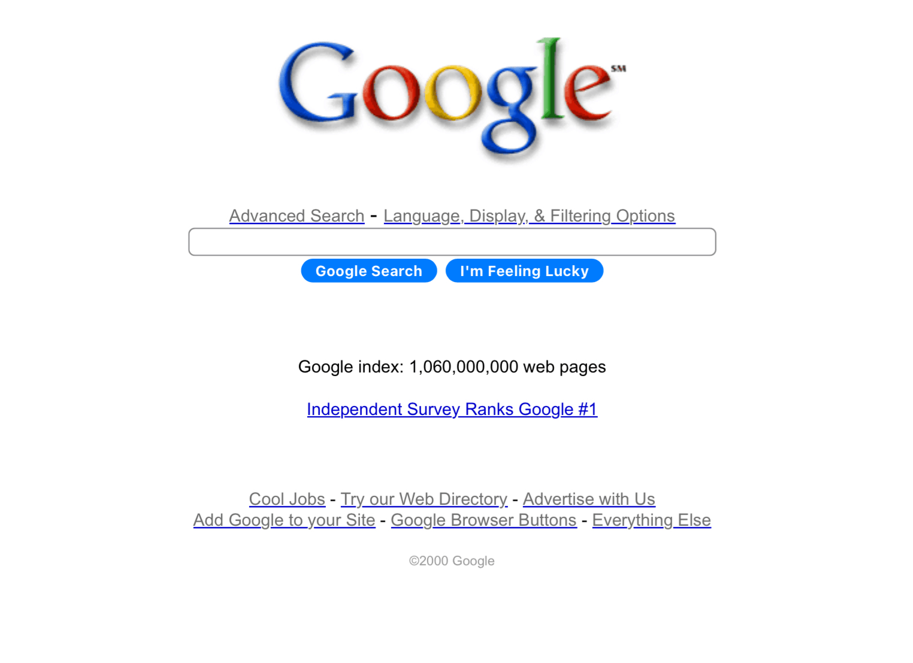
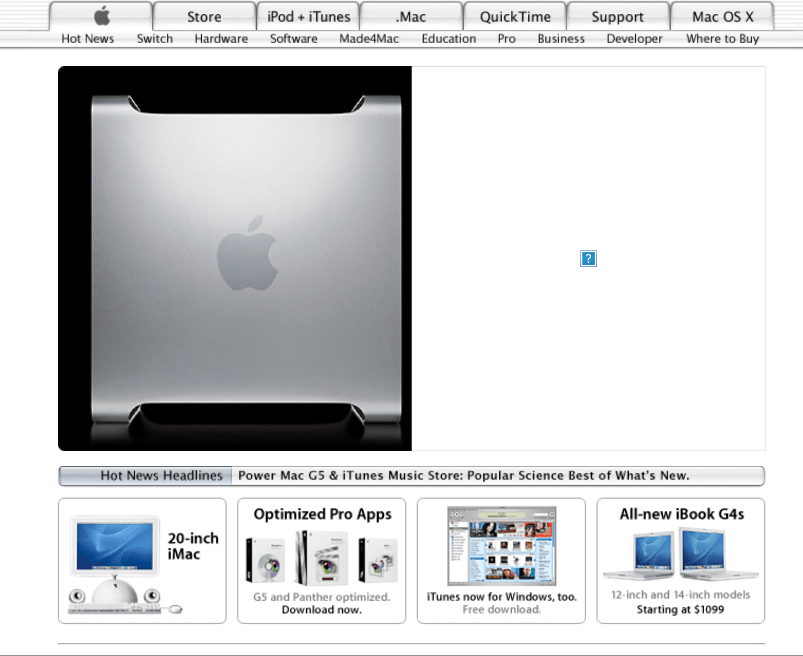

Early 2000s: The Dot-Com Boom & Bust(c.2000-2004)
The early 2000s saw the web mature rapidly, moving beyond basic HTML towards more dynamic and visually rich experiences. The dot-com bubble's burst also led to a focus on usability and cleaner interfaces.
Key Characteristics: Table layouts, web-safe colors, animated GIFs, hit counters, and often a very "busy" look.
Defining Design Elements (Early 2000s Style)
Layouts
Transition from tables to CSS-based layouts, but tables still widely used. Fixed-width, centered designs common. Emphasis on clear content areas.
Color Palettes
Moving beyond web-safe colors. Subtle gradients, softer shades, and more coordinated schemes. Blues, grays, and whites were popular.
Imagery & Graphics
Glossy buttons, reflective surfaces, bevels, and drop shadows were in vogue. Stock photography became standard. Early adoption of PNGs for transparency.
Typography
Wider font choices like Verdana, Tahoma, and Georgia. Text shadows and subtle bevels were added for depth. Sans-serifs favored for readability.
Interactive Elements
Flash for entire sites, intros, games, and rich media. DHTML (Dynamic HTML) for interactive menus. Guestbooks, forums, and early blogging platforms were popular.
Iconic Websites of the Era (Early 2000s Style)
Google (Early 2000s)
 View on Wayback MachineMySpace (2003)
View on Wayback MachineApple.com (Early 2000s)
 View on Wayback MachineA Live Early 2000s Style Snippet
Search Input Example
Example Text Box
This text demonstrates typical font and slight shadow of the era.